A Ramble Round Old Sydney. Continued
Description
This section is from the book "Stories Of Old Sydney", by Charles H. Bertie.
A Ramble Round Old Sydney. Continued
"The Old Stables, Dawes Battery;' If one could write of this as the stable of some mighty racer of yore, as Jorrocks, Bennelong, or The Barb, it would open a page of history full of fact and fancy. Alas! from the absence of fact or knowledge, I know not even one racer who lias graced the building with his presence, so we must let the picture pass with the comment that the subject is one of those old pieces of Sydney artistic enough to chain the eye of an artist.
The two drawings following are side and rear views of the old building known as Dawes Battery. This received its name from Lieutenant Dawes, who built the first battery on this site to protect the port from foreign invasion. It is curious to read to-day a report in which the chances of an enemy's ship escaping the fire of this battery are discussed. I am pleased to record that it was proved to the satisfaction, at least of the writer, that the " raking fire" from the battery would devastate any ship daring enough to venture within its zone. In the year 1798-to be more exact, in June of that year a man arrived in Sydney who was destined to occupy a considerable place in the mercantile annals of the colony. His name was Robert Campbell, and he came to Sydney as a partner in the Calcutta firm of Campbell, Clark and Co., to spy out the land. Mr. Campbell saw such good prospects that he purchased " the lease of Baughan's house and garden," and another lease granted to Captain Waterhouse. On these lands wharves and a residence were erected, and the garden was cultivated. Campbell's Wharf, in time, became the centre of the mercantile life of the port, and from it in January, 1805, was depatched the Lady Barlow with the first large shipment of goods exported from Australia. This was a fateful cargo. In it the great East India Company saw a menace to its trading monopoly, and the goods were seized at the instigation of the officers of the company. The aid of Sir Joseph Banks was invoked by Mr. Campbell's agent in England, and after some months' delay the agent was allowed to sell the cargo, but for exportation only, involving a loss of some £7,000. This appears a somewhat dubious victory, but victory it was. for from this cargo dates the emancipation of Australian trade. If my readers will turn to the frontispiece to this book they will see a portion of the historic lands of Mr. Campbell. The building that appears to be climbing up the hill is the Harbour View Hotel, and marks the boundary of Baughan's lease. To the left of the hotel was Mr. Campbell's garden, and on the water front his wharves. The building in the middle distance was a ladies' school in the days of its gentility.
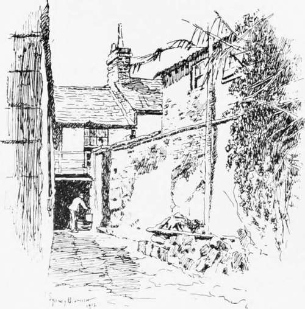Old Stables, Dawes nailery.
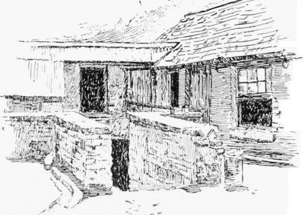Rear view, Dawes Battery.
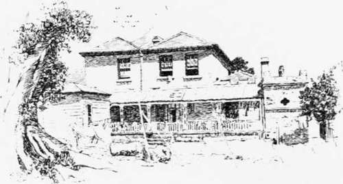Side View, Dawes Battery.
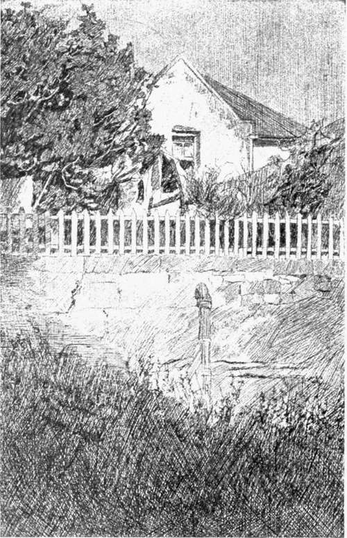In Trinity Avenue Millars Point.
One of the charms of wandering in the older portions of Sydney is the unexpected pictures one comes upon. Mr. Smith has preserved one of these artistic spots in his view of the cottage in Trinity Avenue, near Trinity Church.
Some short distance from the site of our last picture stands (or perhaps it would be better to use the past tense, as the roof was falling on my last visit) an ancient-looking building on the corner of Argyle and Cambridge Streets, at the entrance to the Argyle Cut. This old place has witnessed some curious scenes during its life of 70 or 80 years. For many years it was the shop where the ladies and gentlemen of the " Rocks " lodged their worldly goods, in the care of Mr. Con. Duffy, to be redeemed when the exchequer had a fleeting surplus. At the time of the drawing one could see occasionally a foreign-looking sailor entering its door with a parrot or other bird-brought from some far-off country-to convert the feathered curio into coin of the realm. Tt was. however, in the early days of its career that the pageant before the house was interesting. Some years before 1843 the Government of the day determined to cut a pass, on the line of Argyle Street, through the rocks from George Street to the north-westerly parts of the city. Each week-day morning the chain gang, composed of convicts who had committed some real or fancied offence against the local laws, was marched down from the Hyde Park Barracks, and put to work on the excavation, which was abandoned by the Government after reaching Cumberland Street.. A few years later the City Council took the work in hand and carried it to completion, but not a convict pick was used again. Strange to say the destiny of the Argyle Cut was affected by the insignificant buildings shown in the drawing. The City Surveyor of the time, in reporting to his council, stated that he could not lower the roadway of the Cut to its proper level as it would leave these buildings perched up in the air.
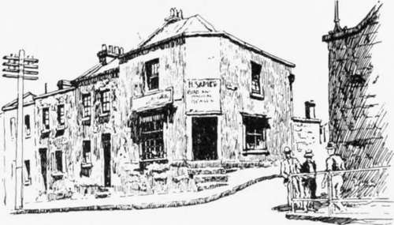At the cornar of Argyle and Cambridge Streets.
If you would like to see a fine old crusted Tory of a building, let me invite you to Pitt Street, opposite the Water and Sewerage Board's offices. Calm and serene, one can almost hear the building say: "For nearly one hundred years I have stood here and watched men come and go. I have seen them build up and pull down and build again, and to-day my life is threatened by the cry of ' room for our high buildings,' but I am still here. And the old days were the best." To read the description of this part of the city by a writer of 75 years ago is to make us consider if we have not lost something in street improvements and skyscrapers. He says: " From the crossing of Park Street to its southern termination, Pitt Street, although less occupied by expensive buildings, is remarkable for the neatness and cheerful appearance displayed by most of the cottages with which it is lined on either side. The small garden plots here and there, their shaded verandahs, and the regularity of design which many of them display, taken altogether, not only please the eye and gratify the taste, but also have a direct tendency to recall the rustic beauties of Old England to the memory of everyone who can think of the land he has left, and rejoice in the land now his home." This building has a claim to distinction in that it was, in the thirties and forties of last century, a schoolhouse under the charge of John Henry Rucker, and amongst the scholars were a number of boys whose connection with it will make the place historic. The brilliant but eccentric Daniel H. Deniehy was one, and George Richard Dibbs another; while the genial father of Australian amusements, John Bennett, can be added to the list.
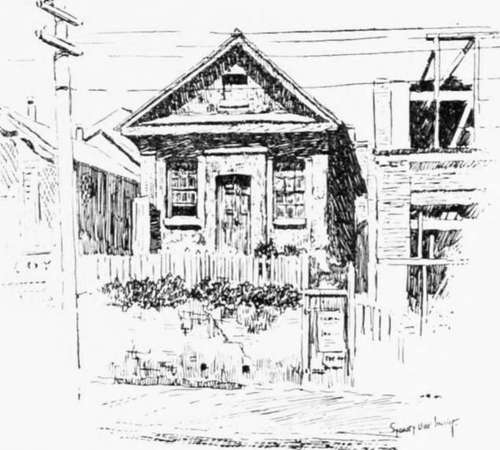Old School House, Pitt Street, opposite Water and Sewerage Board Offices.
When one views the manner in which old landmarks are being swept away, one wonders if the antiquary of a century hence will have anything but memories to engage his ardour.
This reflection is engendered by the sketch of the offices of the Public Instruction Department. Like a man stricken with a mortal disease it awaits dissolution. Erected in 1815 as the office of the Secretary to the Governor, the building, the portal of which many of our famous men have crossed, is now, within a few years of its centenary, to be torn down. Eheu !
Our ramble now leads us down to Kent Street where we find a relic of the twenties, wearing a lofty and superior
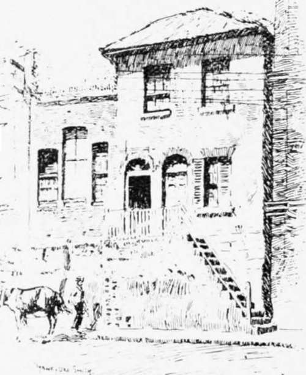A Relic of Old Kent Street.
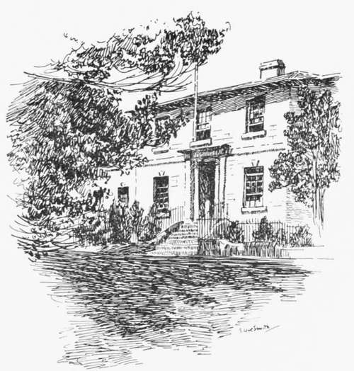Department of Public Instruction, Bridge Street.
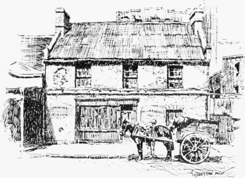Old Store in Sussex Street.
air in the presence of young" but clingy neighbours. When this old building was young, in the locality resided a number of Sydney's merchants with a sprinkling of old salts.
An artist was asked on one occasion to paint a picture of " Peace." He drew a rushing, roaring, foaming waterfall, and, on a branch overhanging the water, a bird with her young in a nest. A modern artist could find the same symbolism in Sussex Street to-day. Surrounded by grain and produce stores, with the bustle of men receiving and delivering goods; with the ceaseless, heavy vehicular traffic of. Sussex Street passing by, the old store, shown in our illustration, rests calm and placid. Moss is growing in the guttering of the eaves, here and there plaster has fallen off, shutters bar the lower windows, and broken panes repay their absence on the upper floor; on the walls may be picked out. in strata, the remains of various signs, and on the door is a mysterious " X," the meaning of which I know not. It is difficult to understand the reason for the neglect of what must be a valuable frontage, but, as lovers of the picturesque, we make no complaint.
We cannot do better in concluding our ramble round old Sydney than stop at the Macquarie Street mansion depicted in our last drawing. It is a type of the colonial mansions in favour with the financial magnates of sixty years ago. The house illustrated is the home of the Burdekin familv, and during the period when the late Sydney Burdekin was a member of Parliament Sir Henry Parkes, the Premier, held meetings of his Cabinet within its hospitable walls.
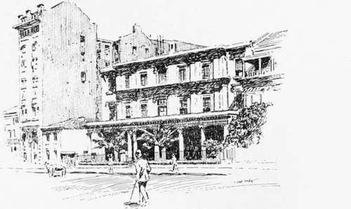Macquarie Street Mansion.
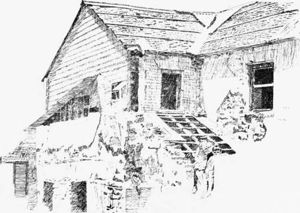The Last Stage.
Continue to:
- prev: A Ramble Round Old Sydney
- Table of Contents
- next: A Mysterious Affair. An Episode Of The Thirties